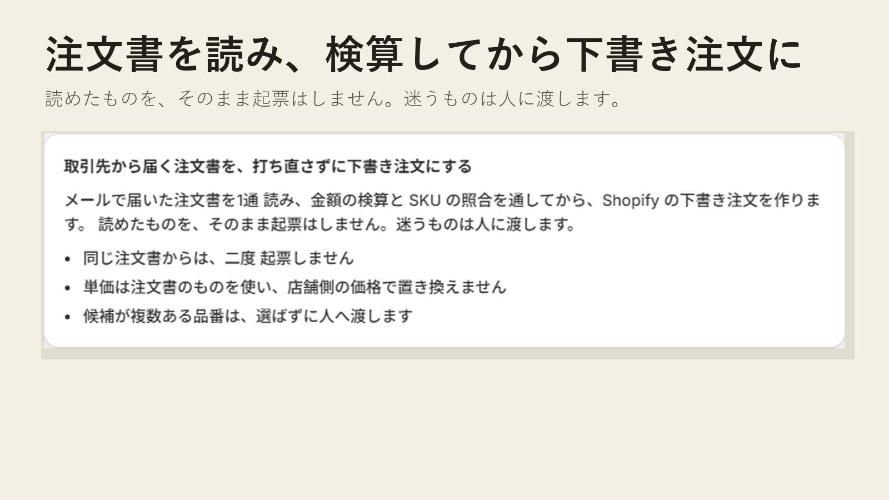

取引先から届く注文書を、そのまま注文に
取引先から注文書が届くたびに、Shopify へ1行ずつ打ち直している。そこを減らしたくて作りました。今のところは、注文書の中身をコピーして貼って使います。
試しに注文書を1通貼って、検算してみる（送信はしません） / 相談してみる
取引先ごとに、書式がばらばらです
Excel で送ってくるところもあれば、自社の帳票を PDF にしてくるところもあります。メールの本文に箇条書きで書いてくる取引先もいるし、FAX がまだ現役のところもある。同じ注文書でも、見た目はほんとうにばらばらです。
書き方が違っても、中身を貼ってもらえれば、品番と数量、単価、金額を Kihyo のほうで拾います。拾えた分は、そのまま Shopify の下書き注文になります。
注文にする前に、計算を確かめます
注文にする前に、単価×数量が金額と合っているかを見ます。明細を足して小計になるかも見ます。どこか合わない行があれば、その行は注文にしないで、どこが合わないのかを表示します。
品番は、お店の SKU 一覧と突き合わせます
FAX を通ると、「PP-A4-500」が「PP A4 500」で届いたりします。区切りが変わっただけなので、記号や空白を詰めて比べれば見つかります。
ただ、わざと当てにいかないときもあります。「AB-12」と「AB1-2」みたいに、詰めると同じになる品番が両方ある場合です。ここは Kihyo が勝手に決めず、候補を出して、お店の方に選んでもらいます。
金額がずれていれば請求のときに気づけます。でも品番の取り違えは、商品が先方に届くまで誰も気づきません。だから迷ったときは、素直に「分かりません」と出すことにしました。
画面

いまの状況
- 注文書を読んで、合う・要確認・合わないに分けるところは動いています。
- 下書き注文を作るところも、試しの注文書で確かめています。
- アプリの公開はまだです。それより先に使ってみたい方は、個別にお手伝いします。
打ち直しに時間を取られているなら、
今の書式のまま、まず1件だけ試してみてください。
このボタンは Google フォーム（docs.google.com）へ移動します。入力された内容は、まず Google のサービス上に保存され、ハシラキャピタルが閲覧します。
使うのは、お問い合わせへの返信と、その内容の確認のためだけです。名簿にしたり、他所へ渡したりはしません。
返信が必要な場合は、返信先（メールアドレスなど）をご記入ください。取引先の名前や実際の注文書など、見せたくないものは、この時点では入れないでください。